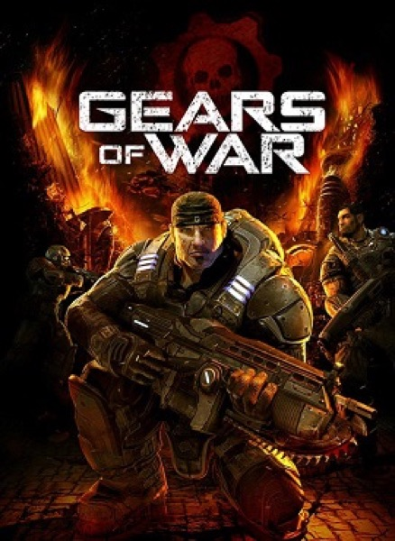

Shooter · 2006
Gears of War
Cover shooting and chunky men set the visual tone of a whole console cycle.

Cover: Wikipedia: Gears of War (video game)
Facts
- Released
- 2006-11-07
- Genre
- Shooter
- Category
- Shooter
- Platforms
- PC, Xbox
- Developers
- Epic Games
- Publishers
- Xbox Game Studios